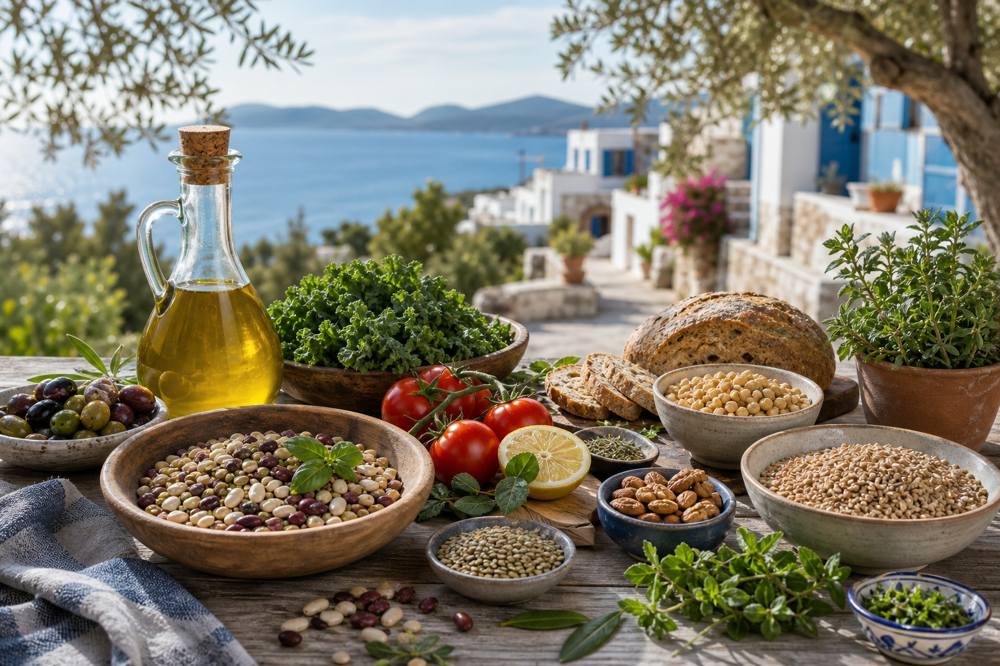

Otofaji
Otofaji Nedir ve Nasıl Aktive Edilir?
Hücrelerin hasarlı bileşenlerini temizleyip yenilediği doğal süreç.
Devamını oku →Longevity Bilimi
Longevity, yalnızca daha uzun yaşamak değil; enerjik, bilişsel olarak keskin ve hastalıksız geçirilen yılları artırmaktır. Bilim bize bunun büyük ölçüde kontrol edilebilir olduğunu gösteriyor.
Ücretsiz Longevity Rehberini AlOtofaji ve mitofaji ile hasar birikiminin önlenmesi, hücresel gençliğin korunmasının temelidir.
İnsülin duyarlılığı, kan şekeri dengesi ve mitokondriyal enerji üretiminin optimizasyonu.
VO2 maks, tüm nedenlere bağlı mortalite için en güçlü bağımsız belirleyicidir.
Sarkopeni önleme, protein sentezi optimizasyonu ve direnç antrenmanı ile fonksiyonel bağımsızlık.
Nöroplastisite, nörodejeneratif hastalık önleme ve bilişsel rezerv inşa etme stratejileri.
Hücrelerin hasarlı bileşenlerini temizleyip yenilediği doğal süreç.
Devamını oku →NAD+ seviyeleri yaşla birlikte düşer; NMN bu durumu dengeleyebilir.
Devamını oku →
Dünyanın en uzun yaşayan insanlarının paylaştığı beslenme ve yaşam ilkeleri.
Devamını oku →Metabolik sağlığınızı, mitokondriyal verimliliğinizi ve hücresel yaşlanma hızınızı ölçün. 2 dakikalık bilimsel testimizle hücresel düzeyde nerede durduğunuzu keşfedin.
Hemen Puanını Hesapla →